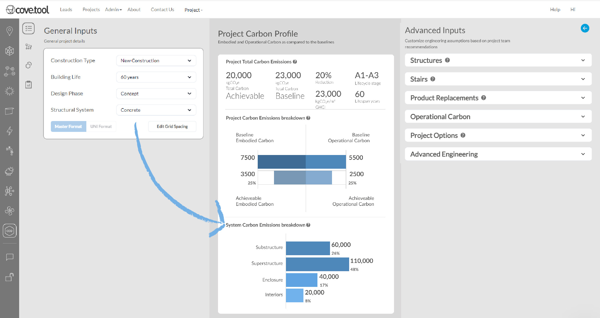
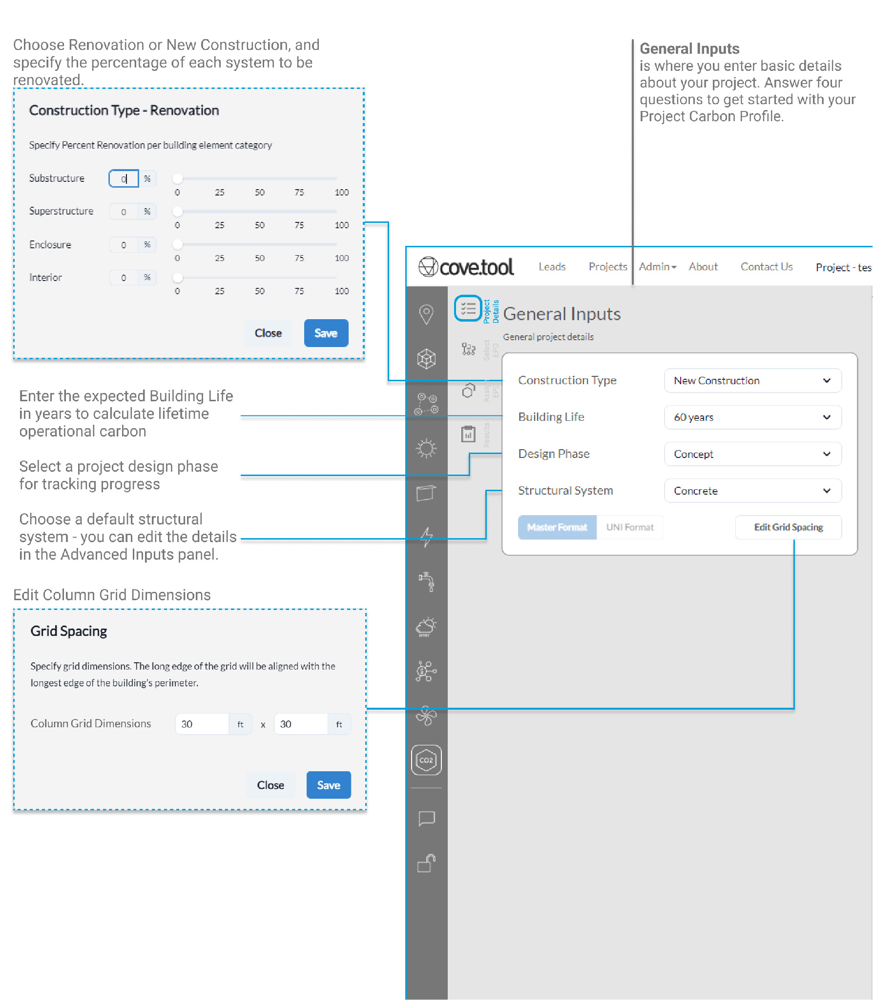
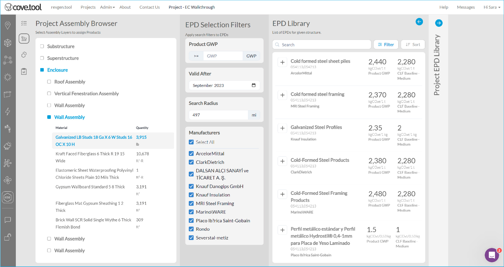
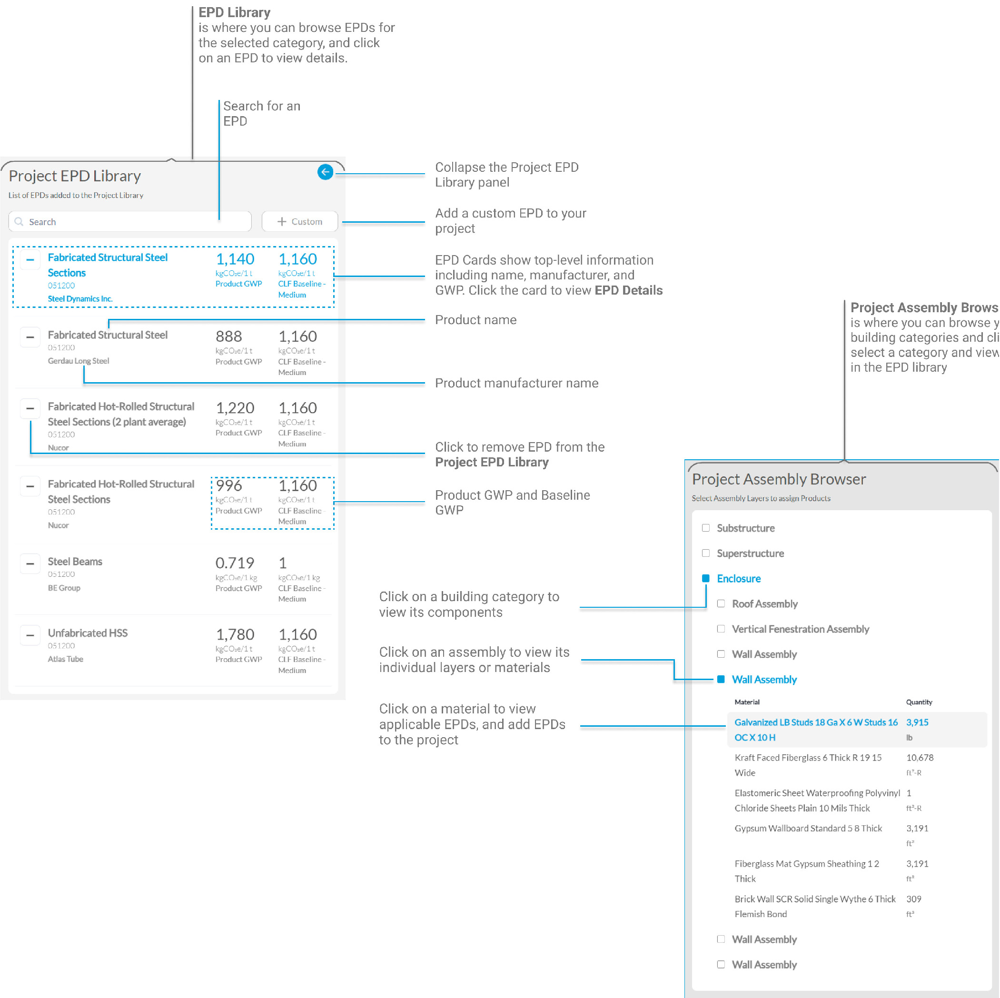
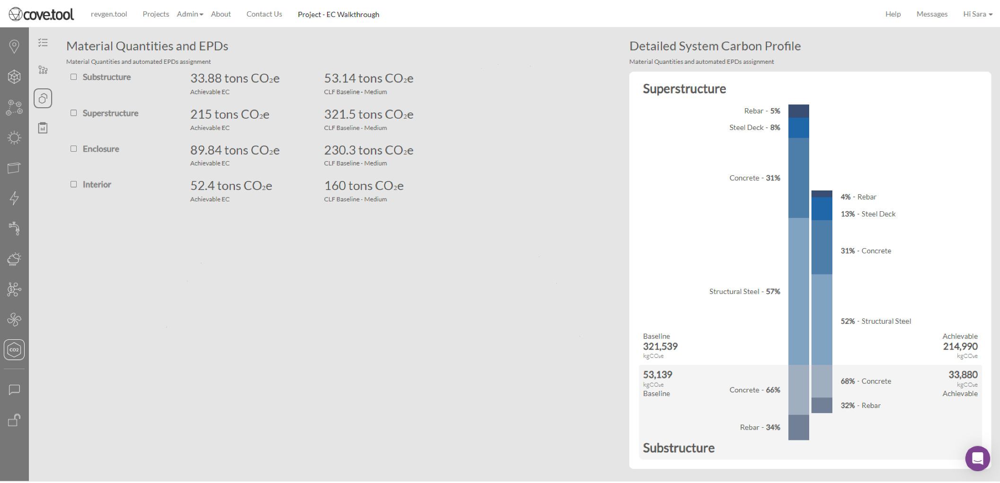
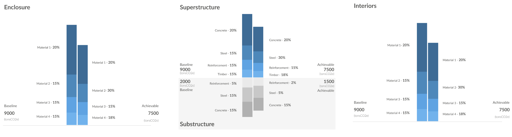
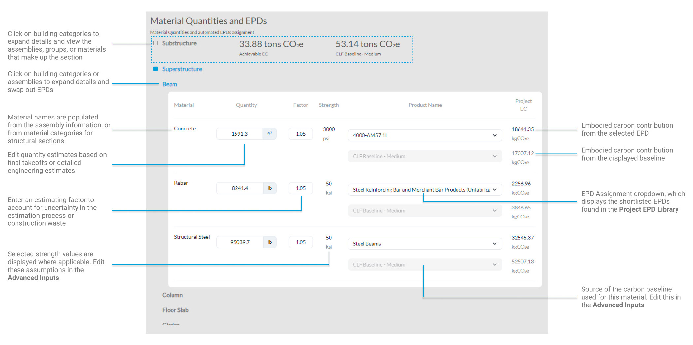
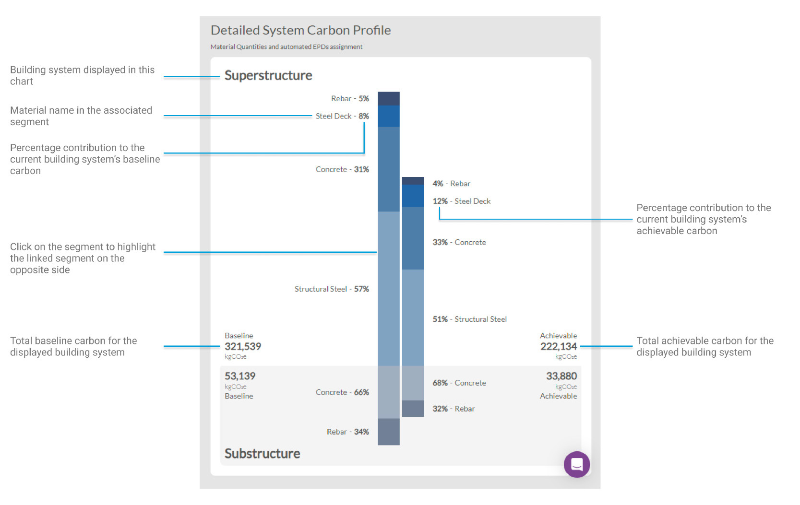
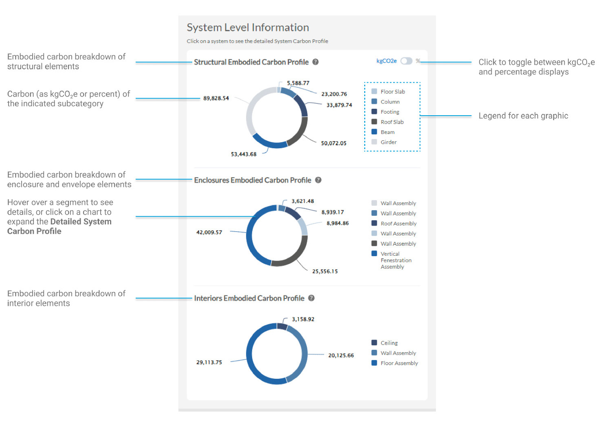
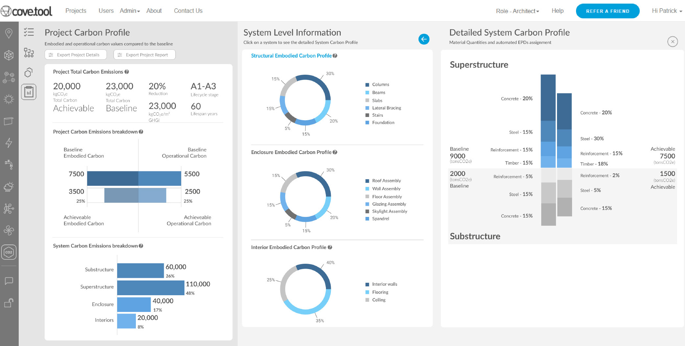

Early-Stage Carbon Estimation Feature
Product - cove.tool analysis.tool
Role - Product Manager / Software Development
The Carbon Feature is an early-stage carbon estimation tool within the cove.tool platoform. It provides users with an intuitive building carbon accounting tool to support their project pursuits. The tool integrates data from the Embodied Carbon in Construction Calculator (EC3) and Carbon Leadership Forum (CLF) standards in order to provide users with automated takeoffs, Environmental Product Declaration (EPD) resources, and results.
As part of this project, I managed and delivered design and implementation documentation, including initial design, deliverables, and proposals. I was responsible for data management and integration, establishing and implementing estimation methodologies, software development of portions of the back-end engine, and leading interdisciplinary coordination between the product, software, and marketing teams. Additionally, I have managed continuing updates and maintenance for the product. A key element of that is the development and implementation of an automated, early-stage structural estimation engine for preliminary quantity and carbon estimates. You can read more in the team's paper on Early-Stage Structural Steel Estimation for Embodied Carbon Decision Making.
Let's Talk About Carbon
The first challenge in discussing carbon - embodied or operational - is in making it relatable. In another study, our team found that most project stakeholders do not consistently find carbon metrics useful or approachable. Using that as a guide, we knew we would have to carefully shape the user experience to be supportive of actual project needs and outcomes. We conducted many focus groups with current users, non-users, and industry leaders to arrive at the final design for the application with three guiding principles:
- Design for Use - The end-result should be accessible, intuitive, and have a defined user flow that architects and design teams are familiar with
- Let Data Drive Design - Gathering data from focus groups and other case studies should be a priority in order to make sure that user needs are being met
- Work with Layers - Ensure that defaults exist wherever possible, and allow users to make as few or as many changes to assumptions as they need
We felt strongly that since every team approaches carbon reporting with different level of comfort and familiarity, our tool should reflect that. With one exception, every input in the tool has a default value to guide typical assumptions. Every assumption can be tailored as needed, however, when teams are prepared to dig into the details. This has helped make the carbon feature successful, approachable, and useful at different project phases.
The Carbon Feature
As a product, the Carbon feature provides project-level carbon insights primarily focused around the A1-A3 life cycle modules. The tool also provides operational carbon projections over the life of the building based on another module within the cove.tool suite and the NREL/Cambium projections for grid decarbonization. Through four pages, users are able to provide initial assumptions, view EPDs, apply those EPDs to material takeoffs and estimates, and then review their overall project carbon profile.
Let's take a look...

User-Friendly Inputs
The first page eases users into talking about carbon - with four required questions, three of which have defaults, users recieve a "day one" carbon estimate that balances potential carbon savings (low carbon, local products) with baseline values for the same types of materials sourced generically. For those with more carbon know-how, the Advanced Inputs offer additional controls over the simulation inputs, baselines used, and analyses included in the results.
From there, the page is broken into thirds that read left to right: General inputs, early-stage results at a glance, and then the optional advanced inputs, which can be expanded to view the different settings. These categories include structural estimation controls, operational energy projection inputs, general project information, and more. After getting the early-stage results, users have two options: proceed to EPD selection and assignment, or jump to the results of their initial estimates, if the team is not yet ready to specify products.

Selecting EPDs
As users proceed through the tool, they get a first look at the quantity estimates based off of their uploaded model and structural estimation. These inputs are references on this page, but can be edited soon. For now, the focus is on EPDs. The EPD Selection page provides users with a shortlist of pre-selected EPDs for each line item in their material takeoff. These EPDs are high-performing products sourced locally to the project address based on information provided in the initial project setup. For each line item, a team can select as many EPDs to shortlist as they want or need. These shortlisted EPDs will be available to assign on the next page.


EPDs and Data Integration
EC3 has an extensive database of digital EPDs, and quickly became the data source of choice when we were developing this feature. Their partnership makes accessing and updating the EPDs displayed here quick and easy. We implemented a number of processes surrounding data sanitation and standardization as a part of that integration as well. These efforts include standardizing embodied carbon reporting units, properly mapping EPDs and products to a MasterFormat aligned system that is consistent within cove.tool, and building safety rails for data rejection to capture outliers or other potentially problematic data points.
In the Project Assembly Browser, users can review their initial estimates, and click on a category or line item to select it and view the related EPDs. These categories will be mirrored in the next page, where quantities can be edited and specific EPDs assigned.
Both the EPD Library and the Project EPD Library consists of cards which highlight key information such as name, manufacturer, GWP, and baseline values. Clicking on a card in either will bring up EPD Details, which provide additional information on the EPD and a link out to EC3. EPD cards also have a plus (in the EPD Library) or a minus (in the Project EPD Library) to add or remove the EPD from the project respectively.
EPD Assignment and Real-Time Carbon Feedback
The EPD Assignment page is all about the selection of EPDs for each line item. To accomplish this, users are asked to select their desired EPDs from the shortlist they built on the previous page. This page allows users to control their achievable carbon values by editing estimated quantites, controlling for uncertainty in the estimation, and selecting specific EPDs for each line item based on the shortlisted products on previous pages.


System Level Reporting
The EPD Assignment page provides real-time updates to each building system breakdown as users assign EPDs. Values flash blue on changes for ease of identification, providing an at-a-glance tracker for the impact of design changes. The system-level graphics include baseline and achievable - or assigned - values and carry through to the final report page.
The Material Quantities and EPDs panel on the left includes all details for the material quantities estimates. Each system (substructure, superstructure, enclosure, and interior) is broken out, and subsystems, assemblies, and material quantities are displayed with their selected EPD, the GWP associated with the EPD, and the baseline value. Each system-level graphic is interactive, including mouseover and on-click highlights to show relationships between actual GWPs and baseline comparisons.


Results
The results page brings the Carbon Feature full circle. It includes the Project Carbon Profile from the first page, updated with changes made through the tool. This top-level result is aimed towards early-stage decisions and high-level balances. The second level of reporting is new to the Results Page. The system level information breaks embodied carbon down by system: structural, enclosure, and interior. These profiles can be toggled to display kgCO2e or percentage breakdowns. This level of information was found to be particularly useful to project leads when determining where high-carbon products are being used, and when to prioritize certain design decisions to reduce carbon. Finally, the detailed System Carbon Profile is reproduced as the most detailed report, including material-wise breakdowns by system. These reports are commonly used by detail-oriented teams to control material specifications and carbon tradeoffs versus the baseline. Finally, users can download a detailed Excel report that tracks all material quantities, GWPs, and baselines as well as summarizes the Results Page numerically.

